Chapter 4 Neymanian Repeated Sampling Inference in Completely Randomized Experiments
In his seminal paper, Neyman, (1923) not only proposed the notation of potential outcomes but also derived rigorous mathematical results for making inference for the average causal effect under a CRE. In contrast to Fisher’s idea of calculating the  -value under the sharp null hypothesis, Neyman, (1923) proposed an unbiased point estimator and a conservative confidence interval based on the sampling distribution of the point estimator. This chapter will introduce Neyman, (1923)’s fundamental results, which are very important for understanding later chapters in Part II of this book.
-value under the sharp null hypothesis, Neyman, (1923) proposed an unbiased point estimator and a conservative confidence interval based on the sampling distribution of the point estimator. This chapter will introduce Neyman, (1923)’s fundamental results, which are very important for understanding later chapters in Part II of this book.
17 Finite population quantities
Consider a CRE with  units, where
units, where  of them receive the treatment and
of them receive the treatment and  of them receive the control. For unit
of them receive the control. For unit  , we have potential outcomes
, we have potential outcomes
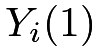
and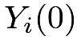
, and individual effect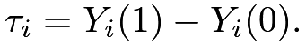
The potential outcomes have finite population means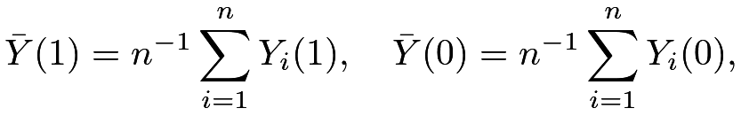 |
variances14
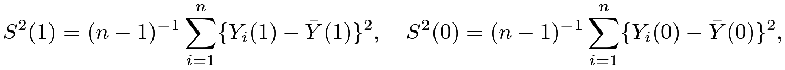 |
and covariance
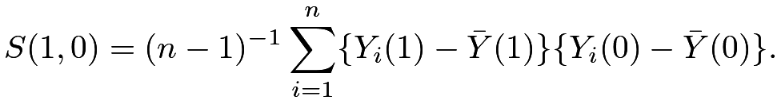 |
The individual effects have mean
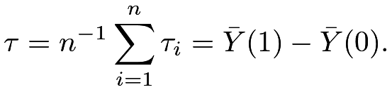 |
and variance
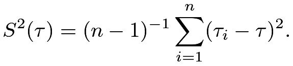 |
We have the following relationship between the variances and covariance.
Lemma 4.1
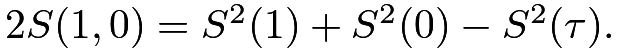
Lemma 4.1 is a basic result and will be useful for later discussion. The proof of Lemma 4.1 follows from elementary algebra. I leave it as Problem 4.1.
These fixed quantities are functions of the Science Table
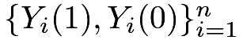
. We are interested in estimating the average causal effect based on the data
based on the data 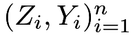
from a CRE.18 Neyman, (1923)’s theorem
Based on the observed outcomes, we can calculate the sample means
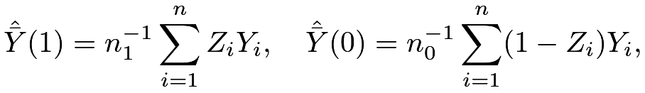 |
the sample variances
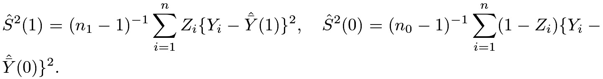 |
But there are no sample versions of
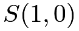
and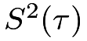
because the potential outcomes and are never jointly observed for each unit . Neyman, (1923) proved the following theorem.
. Neyman, (1923) proved the following theorem.
Theorem 4.1
Under a CRE,
- 1.
the difference-in-means estimator
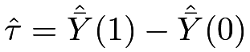
is unbiased for:
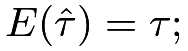
- 2.
 has variance
has variance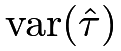

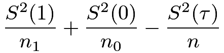
(15) 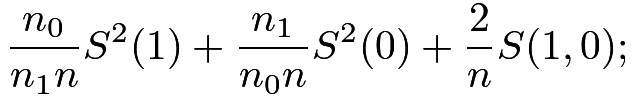
(16) - 3.
the variance estimator
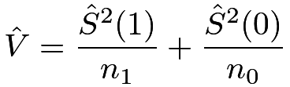
is conservative for estimating
 in the sense that
in the sense that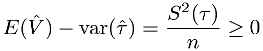
with equality holding if and only if
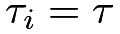
for all units.
I will present the proof of Theorem 4.1 in Section 19. Before proving Theorem 4.1, it is important to clarify the meanings of
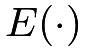
and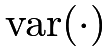
in Theorem 4.1. The potential outcomes are all fixed numbers, and only the treatment indicators ’s are random. Therefore, the expectations and variances are all over the randomness of the ’s, which are random permutations of 1’s and 0’s. Figure 6 illustrates the randomness of , which is a discrete uniform distribution over
’s are random. Therefore, the expectations and variances are all over the randomness of the ’s, which are random permutations of 1’s and 0’s. Figure 6 illustrates the randomness of , which is a discrete uniform distribution over 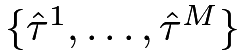
induced by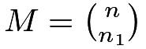
possible treatment allocations. Compare Figure 6 with Figure 3 to see the key differences between the FRT and Neyman, (1923)’s theorem:- 1.
The FRT works for any test statistic but Neyman, (1923)’s theorem is only about the difference in means. Although we could derive the properties of other estimators similar to Neyman, (1923)’s theorem, this mathematical exercise is often quite challenging for general estimators.
- 2.
- 3.
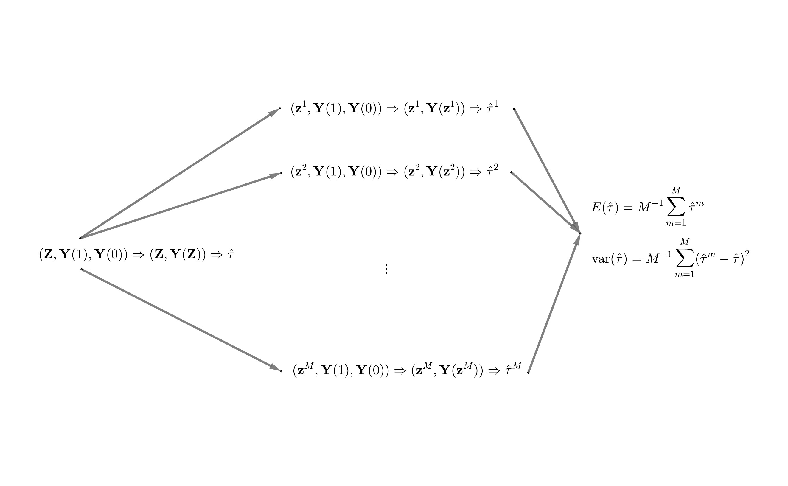
The point estimator is standard but it has a non-trivial variance under the potential outcomes framework with a CRE. The variance formula (15) differs from the classic variance formula for the difference in means15 because it not only depends on the finite population variances of the potential outcomes but also depends on the finite population variance of the individual effects, or, equivalently, the finite population covariance of the potential outcomes. Unfortunately, and are not identifiable from the data because and are never jointly observed.
The formula (15) is a little puzzling in that the more heterogeneous the individual effects are the smaller the variability of is. Section 21.1 will use numerical examples to verify (15). What is the intuition here? I give an explanation based on the equivalent form (16). Compare the case with positively correlated potential outcomes and the case with negatively correlated potential outcomes.
Although the treatment group is a simple random sample from the finite population of units, it is possible to observe relatively large treatment potential outcomes in a realized experiment. Assume this happens.
- 1.
If
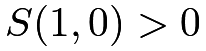
, then those treated units also have relatively large control potential outcomes. Consequently, the observed outcomes under control are relatively small, which results in large.
- 2.
If
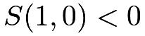
, then those treated units have relatively small control potential outcomes. Consequently, the observed outcomes under control are relatively large, which results in small.
The reverse can also happen if we observe relatively small treatment potential outcomes in a realized experiment. Overall, although the unbiasedness of does not depend on the correlation between the potential outcomes, it is more likely to observe more extreme under than under . So the variance of is larger when the potential outcomes are positively correlated.
Li and Ding, (2017, Theorem 5 and Proposition 3) further proved the following asymptotic Normality of based on the finite population CLT.
Theorem 4.2
Let 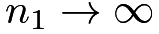 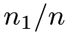 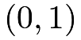 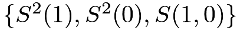 and
and
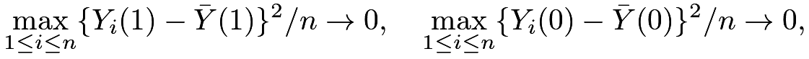 |
then
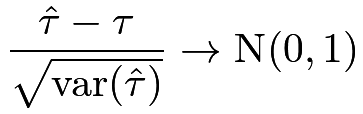 |
in distribution, and
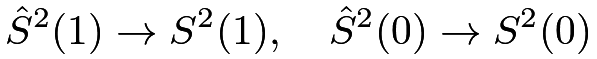 |
in probability.
The proof of Theorem 4.2 is technical and beyond the scope of this book. It ensures that the sampling distribution of can be approximated by a Normal distribution with a large sample size and some regularity conditions. Moreover, it ensures that the sample variances of the outcomes are consistent for the population variances, which further ensures that the probability limit of Neyman, (1923)’s variance estimator is larger than the true variance of . This justifies a conservative large-sample confidence interval for :
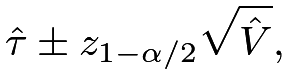 |
where  is the
is the  upper quantile of the standard Normal random variable. It is the same as the confidence interval for the standard two-sample problem asymptotically (see Chapter 30.D.1). This confidence interval covers with probability at least as large as
upper quantile of the standard Normal random variable. It is the same as the confidence interval for the standard two-sample problem asymptotically (see Chapter 30.D.1). This confidence interval covers with probability at least as large as  when the sample size is large enough. By duality, the confidence interval implies a test for
when the sample size is large enough. By duality, the confidence interval implies a test for
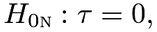 |
which is called the weak null hypothesis.
Due to the fundamental problem of missing one potential outcome, we can at most obtain a conservative variance estimator. In statistics, the definition of the confidence interval allows for over coverage and thus conservativeness in variance estimation (see Chapter 30.B). Conservativeness is not a big problem if underreporting the treatment effect is not a big problem in practice. Sometimes, it can be problematic if the outcomes measure the side effects of a treatment. In medical experiments, underreporting the side effects of a new drug can have severe consequences on patients’ health.
19 Proofs
In this section, I will prove Theorem 4.1.
First, the unbiasedness of follows from the representation
 |
|
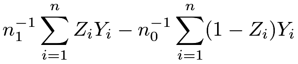 |
||
|
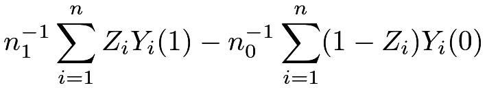 |
and the linearity of the expectation:
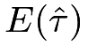 |
|
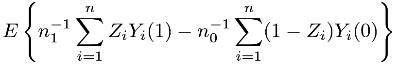 |
||
|
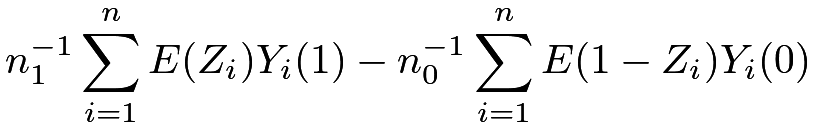 |
|||
|
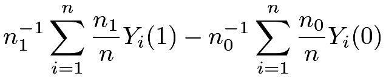 |
|||
|
||||
|
20 Regression analysis of the CRE
Practitioners often use regression-based inference for the average causal effect . A standard approach is to run the ordinary least squares (OLS) of the outcomes on the treatment indicators with an intercept
and use the coefficient of the treatment  as the estimator for the average causal effect.
We can show the coefficient equals the difference in means:
as the estimator for the average causal effect.
We can show the coefficient equals the difference in means:
| (17) |
However, the usual variance estimator from the OLS (see (161) in Chapter 31), e.g., the output from the lm function of R, equals
|
(18) | ||||
where the approximation holds with large and . It differs from even with large and .
Fortunately, the Eicker–Huber–White (EHW) robust variance estimator (see (160) in Chapter 31) is close to :
|
(19) | ||||
where the approximation holds with large and . It is almost identical to . Moreover, the so-called HC2 variant of the EHW robust variance estimator is identical to . The hccm function in the car package returns the EHW robust variance estimator as well as its HC2 variant.
21 Examples
21.1 Simulation
I first choose the sample size as  with treated and control units, and generate the potential outcomes with constant individual causal effects.
with treated and control units, and generate the potential outcomes with constant individual causal effects.
With the Science Table fixed, I repeatedly generate CREs and apply Theorem 4.1 to obtain the point estimator, the conservative variance estimator, and the confidence interval based on the Normal approximation. The th panel of Figure 7 shows the scatter plot of the potential outcomes, and the th panel of Figure 7 shows the histogram of .
I then change the potential outcomes by sorting the control potential outcomes in reverse order
and repeat the above simulation. The th panel of Figure 7 shows the scatter plot of the potential outcomes, and the th panel of Figure 7 shows the histogram of .
I finally permute the control potential outcomes randomly
and repeat the above simulation. The th panel of Figure 7 shows the scatter plot of the potential outcomes, and the th panel of Figure 7 shows the histogram of .
Importantly, in the above three sets of simulations, the correlations between potential outcomes are different but the marginal distributions are the same. The following table compares the true variances, the average estimated variances, and the coverage rates of the confidence intervals.
The true variance depends on the correlation between the potential outcomes, with positively correlated potential outcomes corresponding to a larger sampling variance. This verifies (16). The estimated variances are almost identical because the formula of depends only on the marginal distributions of the potential outcomes. Due to the discrepancy between the true and estimated variances, the coverage rates differ across the three sets of simulations. Only with constant causal effects, the estimated variance is identical to the true variance, verifying point 3 of Theorem 4.1.
Figure 7 also shows the Normal density curves based on the CLT for . They are very close to the histogram over simulations, verifying Theorem 4.2.
21.2 Heavy-tailed outcome and failure of Normal approximations
The CLT of in Theorem 4.2 holds under some regularity conditions. Those conditions will be violated with heavy-tailed potential outcomes. We can modify the above simulation studies to illustrate this point. Assume the individual causal effects are constant but the control potential outcomes are contaminated by a Cauchy component with probability , or . The following code generates the potential outcomes with the probability of contamination being .
Figures 8 and 9 show two realizations of the histograms of with the corresponding Normal approximations. With heavy-tailed potential outcomes, the Normal approximations are quite poor. Moreover, unlike Figure 7, the histograms are quite sensitive to the random seed of the simulation.
21.3 Application
I analyzed the lalonde data in Chapter 13 to illustrate the idea of the FRT. Now I use the data to illustrate the theory in this chapter.
We can easily calculate the point estimator and standard error based on the formulas in Theorem 4.1:
Practitioners often use OLS to estimate the average causal effect which also gives a standard error.
However, the above standard error seems too small compared to the one based on Theorem 4.1. This can be solved by using the EHW robust standard error.
22 Homework Problems
4.1 Proof of Lemma 4.1
Prove Lemma 4.1.
4.2 Alternative proof of Theorem 4.1
Under a CRE, calculate
and use these formulas to calculate .
Remark: Use the results in Chapter 32.
4.3 Neymanian inference and OLS
Prove (17)–(19). Moreover, prove that the HC2 variant of the EHW robust variance estimator recovers exactly.
Remark: Chapter 31 reviews some important technical results about OLS.
4.4 Treatment effect heterogeneity
Show that implies that . Given a counterexample with but .
Show that implies that
Give a counterexample with but
Remark: The first result states that no treatment effect heterogeneity implies equal variances in the treated and control potential outcomes. But the converse is not true. The second result states that if the treated potential outcome has a smaller variance than the control potential outcome, then the individual treatment effect is negatively correlated with the control potential outcome. But the converse is not true. Gerber and Green, (2012, page 293) and Ding et al., (2019, Appendix B.3) gave related discussions.
4.5 A better bound of the variance formula
Neyman, (1923)’s conservative variance estimator essentially uses the following upper bound on the true variance:
which uses the trivial fact that . Show the following upper bound
| (20) |
When does the equality in (20) hold?
The upper bound (20) motivates another conservative variance estimator
Section 21.1 used in the simulation. Repeat the simulation with an additional comparison with the variance estimator and the associated confidence interval.
Remark: You may find Section 30.A.4 useful for the proof. The upper bound (20) can be further improved. Aronow et al., (2014) derived the sharp upper bound for using the Frechet–Hoeffding inequality. Those improvements are rarely used in practice mainly for two reasons. First, they are more complicated than which can be conveniently implemented by OLS. Second, the confidence interval based on also works under other formulations, for example, under a true linear model of the outcome on the treatment, but those improvements do not. Although they are theoretically interesting, those improvements have little practical impact.
4.6 Vector version of Neyman, (1923)
The classic result of Neyman, (1923) is about a scalar outcome. It is common to have multiple outcomes in practice. Therefore, we now extend the potential outcomes to vectors. We consider the average causal effect on a vector outcome :
where and are the potential outcomes of for unit .
The Neyman-type estimator for is the difference between the sample mean vectors of the observed outcomes under treatment and control:
Consider a CRE. Show that is unbiased for . Find the covariance matrix of . Find a (possibly conservative) estimator for the variance.
4.7 Inference in the BRE
In this book, I use the following definition for the BRE.
Definition 4.1 (BRE)
The treatment indicators ’s are IID Bernoulli with receiving the treatment and receiving the control, respectively.
First, we can use the FRT to analyze the BRE. How do we test in the BRE? Can we use the same FRT procedure as in the CRE if the actual experiment is the BRE? If yes, give a justification; if no, explain why.
Second, we can obtain point estimators for and find the associated variance estimators, as Neyman, (1923) did for the CRE.
- 1.
Is
unbiased for ? Is it consistent? - 2.
Find an unbiased estimator for
. - 3.
Compare the variance of the above unbiased estimator and the asymptotic variance of
.
Remark:
Under the BRE, the estimator does not have finite variance but the variance of its asymptotic distribution is finite.
4.8 Recommended reading
Ding, (2016) compared the Fisherian approach and Neymanian approach to analyzing the CRE.
脚注
14. Here the divisor makes the main theorems in this chapter more elegant. Changing the divisor to complicates the formulas but does not change the results fundamentally. With large , the difference is minor.
15. In the classic two-sample problem, the outcomes under the treatment are IID draws from a distribution with mean  and variance
and variance  , and the outcomes under the control are IID draws from a distribution with mean and variance . Under this assumption, we have
Here, is over the randomness of the outcomes. This variance formula does not involve a third term that depends on the variance of the individual causal effects.
, and the outcomes under the control are IID draws from a distribution with mean and variance . Under this assumption, we have
Here, is over the randomness of the outcomes. This variance formula does not involve a third term that depends on the variance of the individual causal effects.